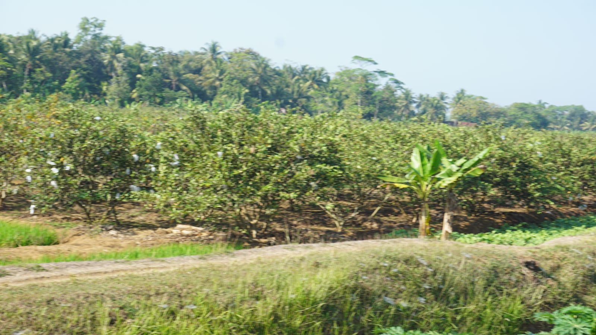

Pengantar
Program Kegiatan Kuliah Kerja Nyata (KKN)-PPM UGM 2024
Story Map ini dibuat dengan tujuan untuk memetakan persebaran lahan Jambu Kristal yang ada di Desa Kertodeso, Kecamatan Mirit, Kabupaten Kebumen. Dengan adanya Story Map ini, diharapkan masyarakat dapat lebih mudah mengetahui lokasi-lokasi lahan Jambu Kristal yang tersebar di desa ini. Selain itu, peta ini juga digunakan sebagai salah satu pendukung dalam pengembangan Desa Wisata Berbasis Organik. Dengan menunjukkan lokasi-lokasi lahan organik, wisatawan dapat lebih tertarik untuk berkunjung dan belajar mengenai pertanian organik yang dijalankan di Desa Kertodeso.
Desa Kertodeso
Kertodeso secara harfiah terdiri dari dua kata yaitu "Kerto" dan "Deso". Kata "Kerto"
merupakan saduran dari kata "Karta" yang dalam bahasa Jawa Kawi berarti “tentram”, sedangkan kata "deso" dari kata “desa” yang mengalami perubahan bunyi pada Bahasa Jawa dari vokal “A” yang menjadi “o”.
Jadi Kertodeso secara harfiah dapat diartikan sebagai “desa yang tentram”. Desa Kertodeso memiliki enam dusun, antara lain Dusun Rowo Pakel, Dusun Babah Anyar, Dusun Pathuk Dasar, Dusun Dasar, Dusun Krajan, Dan Dusun Kedungsawit.
Desa Kertodeso sangat terkenal hasil pertaniannya semenjak jaman dahulu. Salah satu komoditas unggulan Desa Kertodeso pada zaman Bapak Kepala Desa Darso Mujiono adalah buah jeruk.
Komoditas lain yang menjadi produk unggulan dari Desa Kertodeso lainnya berupa pisang, kelapa, dan padi. Sehingga dapat dikatakan Desa Kertodeso memiliki potensi di bidang Pertanian.
Lahan pertanian di Desa Kertodeso didominasi oleh tanaman jambu kristal, yang tentu saja membantu dalam pengembangan ekonomi Desa Kertodeso. Dusun dengan komoditas pertanian jambu kristal terbanyak di Dusun Pakel, Dusun Krajan, dan Dusun Kedungsawit.
Sumber : https://kertodeso.kec-mirit.kebumenkab.go.id/index.php/web/artikel/4/99#_Toc96766512
Peta
Peta Persebaran Lokasi Jambu Kristal
Luas Lahan Jambu Kristal
Dashboard
Dashboard Lahan Jambu Kristal
POTENSI DESA
Potensi Desa Kertodeso Tiap Dusun
Dokumentasi
Dokumentasi Persebaran Lahan Jambu Kristal



TIM KKN
KKN-PPM UGM MIRIT, KEBUMEN 2024
Bias Rambu Suchinta
Membuat Story Map
Desy Puspitasari
Membuat Peta Persebaran Lahan Jambu
Aleksander Jordan
Membuat Dashboard